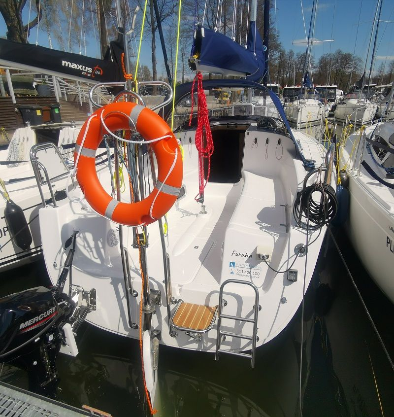
Antila 27 „Furaha”
- Długość8,85 m
- Szerokość2,98 m
- Zanurzenie0,39 – 1,85 m
- Miejsca do spania8
- Kabiny3
- Toaletamorska
- Prysznicz ciepłą wodą
- Sterrumpel
- Silnikzaburtowy9,9 KM
- Rok produkcji2022
Antila 27 · Furaha
O jachcie
Antila 27 „Furaha” to turystyczny jacht żaglowy z rocznika 2022, zaprojektowany z myślą o wygodnym i stabilnym pływaniu rekreacyjnym. Model ten łączy kompaktowe, dobrze wyważone proporcje kadłuba z funkcjonalnym układem wnętrza, dzięki czemu sprawdza się zarówno podczas krótkich wypadów, jak i kilkudniowych rejsów z kilkuosobową załogą.
Jednostka oferuje przewidywalne zachowanie na wodzie i komfort użytkowania typowy dla sprawdzonej konstrukcji Antili 27.
Wnętrze
Wnętrze tej jednostki utrzymane jest w nieco innej kolorystyce – wykończenie łączy wyraziste elementy zabudowy z kontrastowymi tapicerkami, co nadaje przestrzeni nietypowy charakter.
Pod pokładem znajduje się przestronna mesa, trzy zamykane kabiny oraz w pełni wyposażony kambuz. Układ wnętrza pozwala kilku osobom funkcjonować równolegle – przygotowanie posiłku, przebranie się czy odpoczynek nie kolidują ze sobą.
Rozmieszczenie schowków i bakist ułatwia organizację bagażu oraz prowiantu podczas dłuższego pobytu na wodzie. Odpowiednia ilość światła dziennego oraz wentylacja poprawiają komfort użytkowania w cieplejszych miesiącach.
Koje i liczba miejsc
Układ miejsc do spania obejmuje dwuosobowe koje w kabinach oraz dodatkowe miejsca w mesie. Taki rozkład daje elastyczność przy planowaniu załogi – jednostka dobrze sprawdza się zarówno dla par, jak i rodzin z dziećmi.
Maksymalna liczba osób przewidziana dla tego modelu została podana w danych technicznych poniżej. W praktyce, przy dłuższych rejsach, komfort zależy od ilości bagażu oraz indywidualnych potrzeb załogi.
Prowadzenie
Antila 27 „Furaha” zachowuje się stabilnie i przewidywalnie podczas żeglugi. Proporcje kadłuba oraz dobrze zaprojektowany kokpit umożliwiają sprawną obsługę nawet przez niewielką załogę.
Jednostka wyposażona jest w silnik z rozruchem manualnym, co dla wielu żeglarzy stanowi standardowe i proste rozwiązanie eksploatacyjne. Obsługa napędu pozostaje intuicyjna i nieskomplikowana.
To model często wybierany przez osoby posiadające patent żeglarski, które oczekują wygodnej, ale jednocześnie nieskomplikowanej w prowadzeniu jednostki turystycznej.
Wyposażenie
Na pokładzie znajduje się komplet wyposażenia niezbędnego do komfortowego rejsu:
– w pełni wyposażony kambuz,
– instalacja wodna i sanitarna,
– oświetlenie wewnętrzne i zewnętrzne,
– wyposażenie cumownicze i ratunkowe,
– elementy zwiększające wygodę postoju.
Szczegółowe dane techniczne – w tym długość, szerokość, zanurzenie oraz pełna lista wyposażenia – znajdują się w tabeli poniżej.
Antila 27 „Furaha” to propozycja dla załóg, które cenią funkcjonalny układ wnętrza, stabilność podczas żeglugi oraz praktyczne rozwiązania sprawdzone w turystyce mazurskiej.
Jeżeli zależy Ci na jednostce z klasycznym wyposażeniem, sprawdzonej konstrukcji i przemyślanym układzie przestrzeni – ten egzemplarz będzie dobrym wyborem.
Pełne dane techniczne oraz wszystkie dostępne jednostki tego modelu znajdziesz na stronie Antila 27.
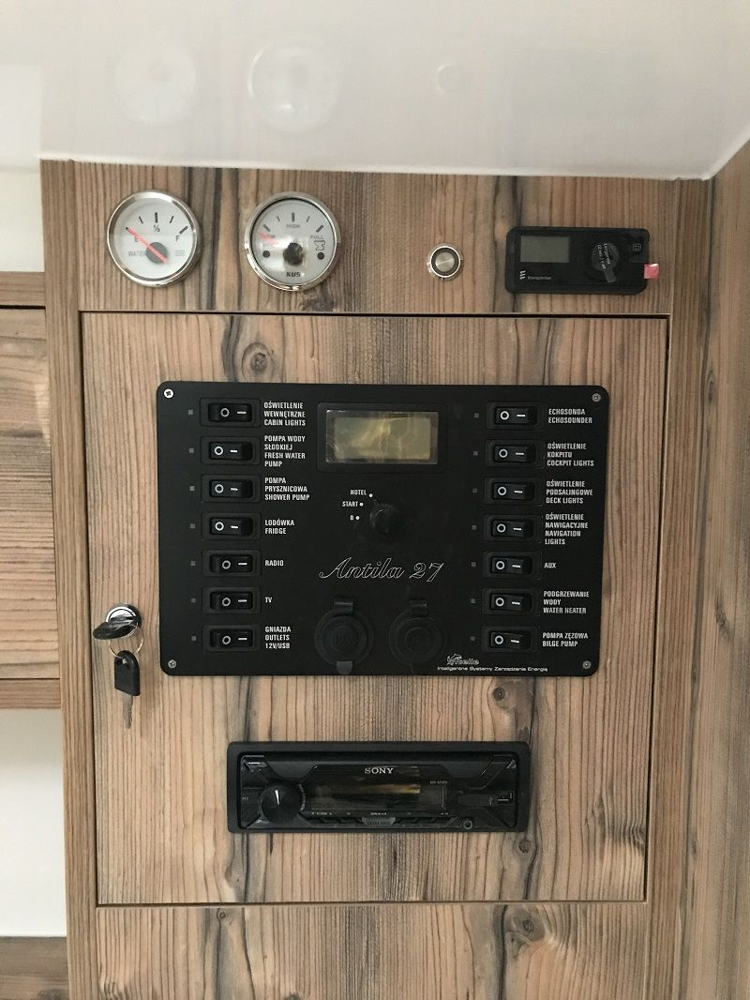
Wyposażenie
- kuchenka gazowa z palnikiem
- pełne wyposażenie kambuza
- lodówka
- instalacja wody pitnej
- instalacja elektryczna 12 V i 230 V
- radio CD
- TV
- zlewozmywak
- WC morskie + zbiornik na fekalia
- prysznic z ciepłą wodą
- ogrzewanie Eberspracher
- oświetlenie w kokpicie
- głośniki w kokpicie
- prysznic w kokpicie
- echosonda
- szprycbuda
- stolik kokpitowy
- środki ratunkowe i gaśnicze
- osprzęt jachtowy (odbijacze, bosak, pagaje, kotwica, wiadro)
- silnik Mercury 9.9 KM
Warunki rezerwacji
- podpisana umowa czarterowa (przesłana elektronicznie lub podpisana na miejscu),
- min. patent żeglarza jachtowego,
- dowód osobisty.
- Odbiór jachtu w godzinach 16:00 – 20:00 w dniu przyjazdu (inne godziny do uzgodnienia).
- Zdanie jachtu w godzinach 8:00 – 10:00 w dniu zakończenia rejsu (inne godziny do uzgodnienia).
- Odbiór i zdanie jachtu odbywa się w porcie Stanica Wodna STRANDA k. Giżycka lub ustalonym wcześniej innym miejscu.
Dane techniczne
- Długość
- 8,85 m
- Szerokość
- 2,98 m
- Zanurzenie
- 0,39 – 1,85 m
- Liczba osób
- 8
- Zamykane kabiny
- 3
- Wysokość kabiny
- 1,85 m
- Typ miecza
- obrotowy
- Typ steru
- płetwa na pawęży
- Typ silnika
- przyczepny
- Powierzchnia żagli
- 38 m²
- Rok produkcji
- 2022
Dostępność i rezerwacja
Wolisz zapytać?
Napisz przez formularz albo zadzwoń: +48 511 420 100. Biuro czynne codziennie 8:00 – 20:00.
Zapytanie wysłane
Dotyczy: Antila 27 „Furaha”. Odpowiemy telefonicznie albo e-mailem.
Inne jednostki
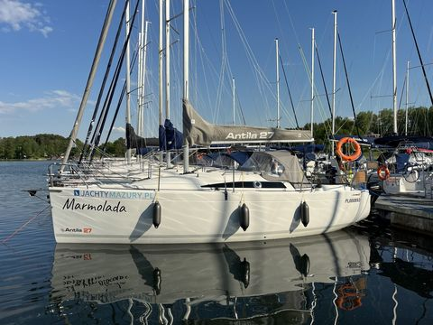
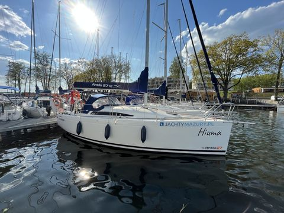
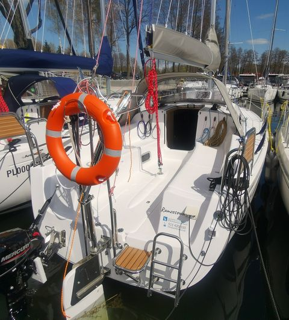
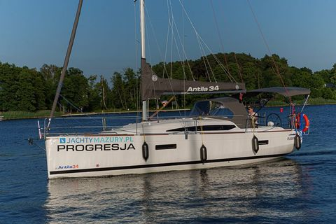
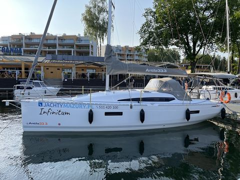
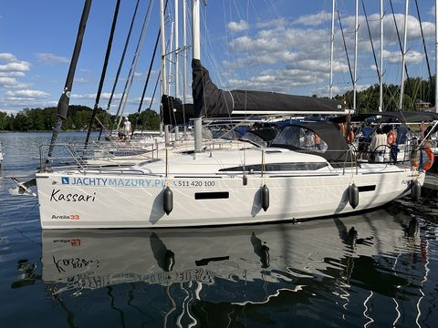
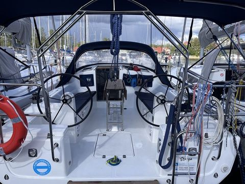
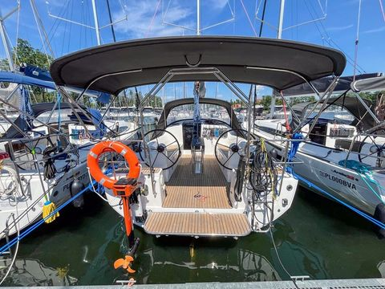
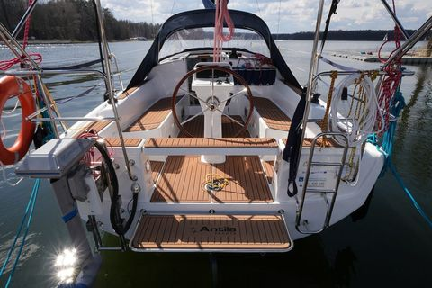
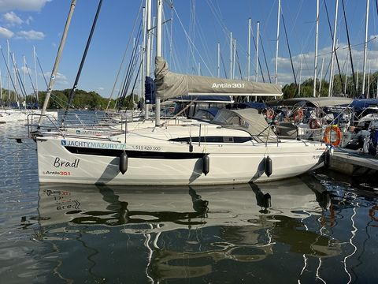